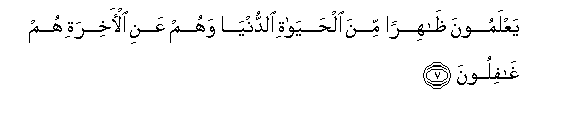

Sacred Texts Islam Index
Hypertext Qur'an Unicode Palmer Pickthall Yusuf Ali English Rodwell
Sūra XXX.: Rūm, or The Roman Empire. Index
Previous Next

The Holy Quran, tr. by Yusuf Ali, [1934], at sacred-texts.com
Sūra XXX.: Rūm, or The Roman Empire.
Section 1
1. A. L. M.
2. The Roman Empire
Has been defeated—
3. Fee adna al-ardi wahum min baAAdi ghalabihim sayaghliboona
3. In a land close by;
But they, (even) after
(This) defeat of theirs,
Will soon be victorious—
4. Fee bidAAi sineena lillahi al-amru min qablu wamin baAAdu wayawma-ithin yafrahu almu/minoona
4. Within a few years.
With God is the Decision,
In the Past
And in the Future:
On that Day shall
The Believers rejoice—
5. Binasri Allahi yansuru man yashao wahuwa alAAazeezu alrraheemu
5. With the help of God.
He helps whom He will,
And He is Exalted in Might,
Most Merciful.
6. WaAAda Allahi la yukhlifu Allahu waAAdahu walakinna akthara alnnasi la yaAAlamoona
6. (It is) the promise of God.
Never does God depart
From His promise:
But most men understand not.

7. YaAAlamoona thahiran mina alhayati alddunya wahum AAani al-akhirati hum ghafiloona
7. They know but the outer
(Things) in the life
Of this world: but
Of the End of things
They are heedless.
8. Awa lam yatafakkaroo fee anfusihim ma khalaqa Allahu alssamawati waal-arda wama baynahuma illa bialhaqqi waajalin musamman wa-inna katheeran mina alnnasi biliqa-i rabbihim lakafiroona
8. Do they not reflect
In their own minds?
Not but for just ends
And for a term appointed,
Did God create the heavens
And the earth, and all
Between them: yet are there
Truly many among men
Who deny the meeting
With their Lord
(At the Resurrection)!
9. Awa lam yaseeroo fee al-ardi fayanthuroo kayfa kana AAaqibatu allatheena min qablihim kanoo ashadda minhum quwwatan waatharoo al-arda waAAamarooha akthara mimma AAamarooha wajaat-hum rusuluhum bialbayyinati fama kana Allahu liyathlimahum walakin kanoo anfusahum yathlimoona
9. Do they not travel
Through the earth, and see
What was the End
Of those before them?
They were superior to them
In strength: they tilled
The soil and populated it
In greater numbers than these
Have done: there came to them
Their apostles with Clear (Signs),
(Which they rejected, to their
Own destruction): it was not
God who wronged them, but
They wronged their own souls.
10. Thumma kana AAaqibata allatheena asaoo alssoo-a an kaththaboo bi-ayati Allahi wakanoo biha yastahzi-oona
10. In the long run
Evil in the extreme
Will be the End of those
Who do evil; for that
They rejected the Signs
Of God, and held them up
To ridicule.